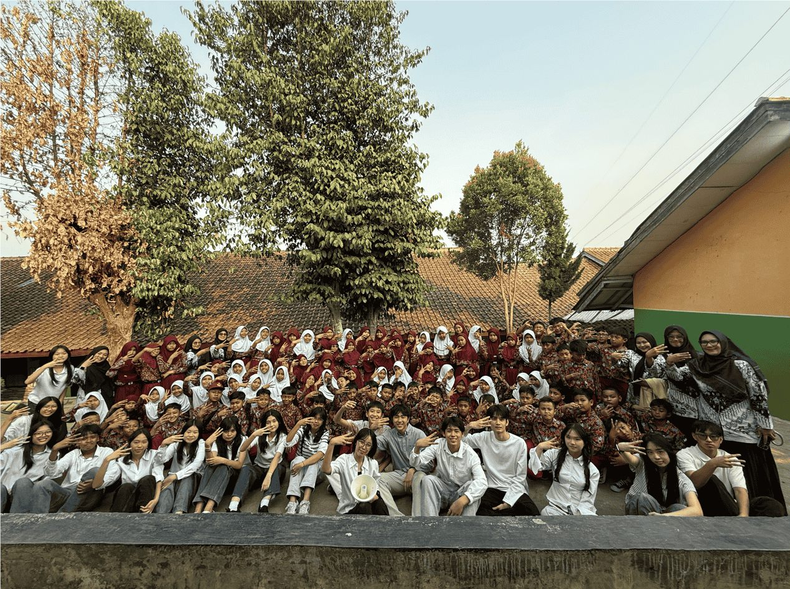

25/09/26 • Jl. Letkol G.A. Manulang No.132, Padalarang, Kec. Padalarang, Kabupaten Bandung Barat, Jawa Barat
Bootcamp Pertama EcoBloom: SDN 2 Sudimampir
Pada 25 September 2026, EcoBloom mengadakan bootcamp pertamanya di SDN 2 Sudimampir bersama lebih dari 50 siswa. Kegiatan ini menjadi salah satu langkah awal EcoBloom dalam membawa edukasi mengenai lingkungan secara langsung kepada para siswa.

Dalam bootcamp ini, kami mengangkat tema pengenalan jenis-jenis sampah, cara membuang sampah pada tempat yang tepat, serta pentingnya memilah sampah. Kegiatan dimulai dengan sesi edukasi dari tim Substansi melalui presentasi yang dilengkapi dengan mini quiz interaktif. Dalam quiz tersebut, kami menunjukkan berbagai benda kepada para siswa dan mengajak mereka yang ingin menjawab untuk mengangkat tangan. Mereka kemudian ditantang untuk menentukan jenis sampah dari benda tersebut, menjelaskan alasannya, serta menyebutkan tempat yang tepat untuk membuangnya. Siswa yang berhasil menjawab pertanyaan dengan tepat juga mendapatkan makanan dari tim EcoBloom sebagai apresiasi atas keberanian dan partisipasi mereka.

Setelah mendapatkan materi, para siswa diajak untuk langsung mempraktikkan apa yang telah mereka pelajari. Mereka dibagi menjadi beberapa kelompok dan diberikan tiga jenis tempat sampah, yaitu B3, organik, dan anorganik. Berbagai jenis sampah kemudian ditempatkan di beberapa area sekolah. Dengan menggunakan sarung tangan untuk menjaga keamanan, setiap kelompok ditantang untuk mencari, mengumpulkan, dan memilah sampah sesuai dengan jenisnya.
Agar kegiatan menjadi lebih interaktif, sesi tersebut juga dibuat dalam bentuk kompetisi. Kelompok yang berhasil mengumpulkan dan memilah sampah dengan jumlah terbanyak secara tepat mendapatkan hadiah berupa makanan dan cokelat. Di luar kompetisi, kegiatan ini juga menjadi kesempatan bagi para siswa untuk bekerja sama, bergerak aktif, dan menerapkan pengetahuan yang baru mereka dapatkan secara langsung.
Melihat antusiasme para siswa selama kegiatan menjadi salah satu bagian yang paling berkesan bagi kami. Bootcamp ini bukan hanya menjadi pengalaman pertama EcoBloom dalam mengadakan kegiatan edukasi secara langsung, tetapi juga menjadi langkah awal dalam mewujudkan tujuan kami untuk terus membawa edukasi dan kepedulian terhadap lingkungan ke lebih banyak orang.
Terima kasih kepada SDN 2 Sudimampir, para guru, seluruh siswa, dan tim EcoBloom yang telah menjadi bagian dari bootcamp pertama kami. Ini baru langkah pertama, dan kami berharap dapat terus menghadirkan lebih banyak kegiatan yang memberikan dampak positif bagi lingkungan dan masyarakat.